Eksterijer
Octavia
ŠKODA Octavia Panoramski krov
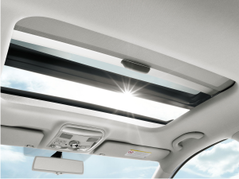
Jednodjelni panormaski krov nove Octavie je električno kontrolisan. Za optimalnu klimatizaciju interijera on je od toniranog stakla koje reducira svjetlost i temperaturu sa vana.
Staklo se može podignuti ili povući nazad stvarajući otvoren prostor iznad prednjih sjedišta. Dodtano, zaštitnik od vjetra se podiže koji štiti od zvuka vjetra i ostalih efekata koje može prozvesti.
Zavisno od pozicije, kompletna unutrašnjost panoramskog krova se se dodatno može pokriti manuelno kontrolisanom unutrašnjom roletnom koja dodatno može zaštiti od jake sunčeve svjetlosti.
Dizajn ŠKODA Octavia
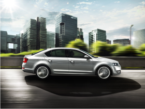
Novi jezik ŠKODA dizajna je čist, precizan i kristalan. On daje harmonične proporcije, visoku funkcionalnost i bezvremenski izgled. Kromirana rešetka prednje maske zahvaljujući svom dizajnu daje upečatljiv izgled novog ŠKODA logotipa.Maska je povezana sa prednjim svjetlima sa karakterističnim poveznim elementima u donjem dijelu. Pozicija pojedinih dijelova u prednjem dijelu daje dodatnu karizmu i sportski duh samom vozilu.
Balansiran dizajn nove Octavie je prisutan i kod bočnog pogleda na vozilo, gdje dinamičnost, elegantnost i osjećaj praktičnosti dolaze do izražaja. Silueta Vam govori da vozilo nudi veliku prostranost kako za putnike tako i za prtljag. Oštre linije koje se protežu od prednjih svjetala prema zadnjim svjetlima, pokazuje snagu vozila i jasno dijeli vozilo na dvije harmonične cjeline (gornji dio koji je osvjetljen i donji dio koji se nalazi u sjeni).
Jednako dobar utisak se dobiva i pogledom na zadnji dio vozila, koji privlači pažnju čistim površinama i preciznim dizajnom.Sa masivnim branicima dobija se osjećaj sigurnosti.
Bi-xenon svjetla sa LED dnevnim svjetlima
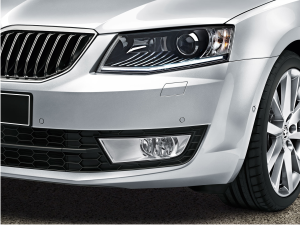
Posmatrajući bi-xenon svjetla sa LED dnevnim svjetlima sa funkcionalnog ili dizajnerskog aspekta oni uvijek predstavljaju najbolji izbor. Oni imaju izvanredno osvjetljenje te uz kombinaciju sa AFS sistemom (Adaptive Frontlight System)jednostavno se prilagođavaju različitim uslovima na cesti. Nove LED diode su sa neprekidnom niti svjetlosti. Zahvaljujući LED diodama bit ćete uočljivi na cesti za druge vozače ali one i dodatno ističu kvalitet i tehničku zrelost automobila.
Bi-xenon svjetla sa LED dnevnim svjetlima kod Octave lako se mogu upariti i sa "Intelligent Light Assistant" (pogledaj Assistant Systems).
Interijer
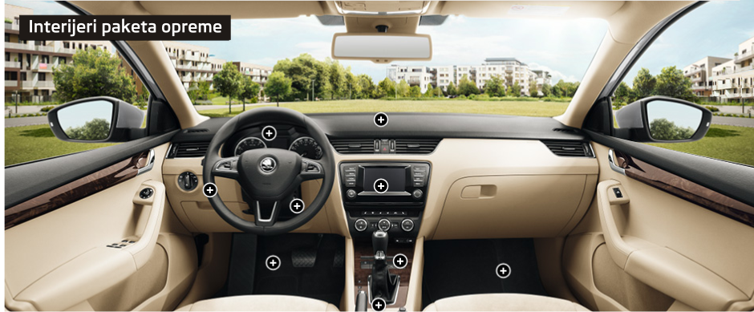
Oprema Elegance
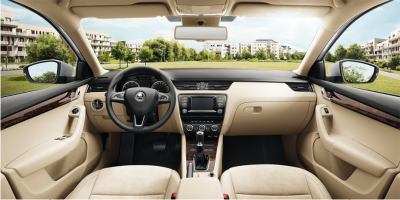
Oprema je dizajnirana sa luksuznim interijerom u crnoj ili bež verziji sa crnom ili crno/bež kontrolnom tablom, kožnim upravljačem, kromiranim elementima i opcionalnim dekorativnim.
Oprema Ambition
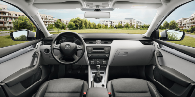
Ambition oprema dolazi sa impresivnim interijerom sa crnom, sivom ili crno/sivom kontrolnom tablom i kromiranim elementima.
Oprema Active
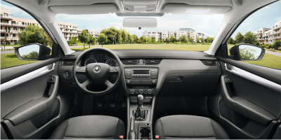
Active verzija je okarakterisana jednostavnim interijerom i crnom Onyx kontrolnom tablom, praktičnom Active unutrašnjšću i oblogama na vratima. Ventilacioni otvori imaju polirane okvire.
Pretinci ispod prednjih sjedišta ŠKODA Octavie
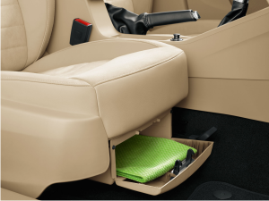
Ispod vozačevog sjedišta možete naći neke od "simply clever" detalja. Specijalni držač za refleksni prsluk koji će vam biti pri ruci u slučaju potrebe za njegovim korištenjem.
Ladica sa zakretnim poklopcem smještena je ispod suvozačevog prednjeg sjedišta na idealnom mjestu za prijevoz stvari, koje želite imati u svome automobilu, a ne želite da budu na vidnom mjestu. Bilo da skrivate rezervne stvari, parfem, par rukavica, uvijek ćete znati gdje ih možete pronaći.
ŠKODA Octavia DSG mjenjač
Zbog mogućnosti odabira odgovarajućeg stepena brzine DSG može zadržati motor u optimalnom operativnom režimu, te stoga dostići optimalnu potrošnju goriva, kao i CO2 emisija.
7-brzinski DSG mjenjač se isporučuje sa 1,2 TSI/77 kW motorom ili 1,4 TSI/132 kW motorom namijenjenim RS modelima. Maksimalni okretni moment namijenjen za TSI benzinske motore sa 77kW, 103kW i 132kW i za 1.6 TDI CR DPF 77kW
6-brzinski DSG mjenjač se isporučuje sa 2.0 TDI CR DPF/110 kW Green tec dizelskim motorom.
Novi Sistem Stabilizacije ESC u novoj ŠKODA Octaviji
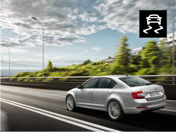
Electronic Stability Control formira kišobran za različite druge sisteme i važne funkcije nove Octavie. Novite koji se pojavljuje u ESC sistemu je multikolizona kočnica i Prefill funkcija.
Ukoliko se vaš automobil nadje u situaciji u kojoj je jedan od prednjih zračnih jastuka aktiviran, multikoliziona kočnica može spriječiti dalje nekontrolisano kretanje vozila. Prefill funkcija povećava pritisak na kočioni sistem kada se brzo pusti papučica gasa. Ukoliko nakon toga počnete žestoko kočiti, početak kočenja je brži.
ŠKODA Octavia pokretanje bez ključa
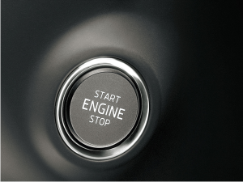
U sklopu KESSY funkcije (Keyless Entry, Start and exit System) Vaša nova Octavia vam nudi opciju kontrole bez upotrebe ključa.
Ovo znači da pored otključavanja vozila bez uoptrebe ključa Vi također koristite i Start/Stop dugme na kontrolnoj tabli za paljenje/gašenje motora Vašeg vozila.
ŠKODA Octavia Parking Sistemi
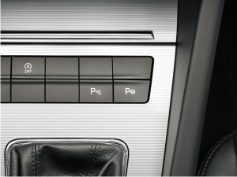
- Parking asistent koristi senzore u zadnjim branicima senzori u prednjem braniku. Signalizacija je zvučna i vizuelna prikaz na displey-u na centralnoj konzoli.
- Automatski parking asistent ima mogućnost prepoznavanja potrebnog prostora za parkiranje uzdužno i bočno. Pri opciji paralelnog parkiranja ovaj sistem prepoznaje prostor za parkiranje koji je samo 60cm duži od dužine vozila.
ŠKODA Octavia kontrolna tabla
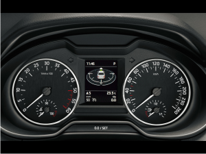
Kao što je i tično za ŠKODA modele nova Octavia i njena kontrolna tabla je kreirana sa jasno definisanim funkcijama koje su na dohvat ruke vozača.
Zavisno od nivoa opremljenosti Vaše vozilo može imati mnogobrojne elektronske komande i multimedijalne sisteme kao vrhunske elektronske asistente u vožnji.
ŠKODA Octavia multifunkcionalni kožni upravljač
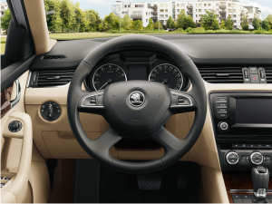
Postoji nekoliko verzija upravljača za novu Octaviu.
Atraktivna varijanta je reprezentovana multifunkcionalnim upravljačem sa tri ili četiri kraka sa komanadama za radio i telefon i kromiranim detaljima.
Tri kraka verzija u opciji može sadržavati i komande za mjenjanje brzina kod DSG mjenjača.
ŠKODA Octavia Multimedijalni informacioni sistemi
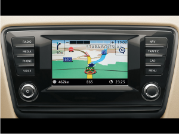
Osnovu multimedijalnih sistema čine radio i navigacioni uređaji, spreman za komunikaciju sa Vašim telefonom putem Bluetooth-a ili USB priključka.
Pored Blues, Swing i Bolero predstavljamo potpuno novi "infotainment radio" sa proširenim funkcijama. Novi su i navigacioni uređaji Amundsen + ili Columbus. Za sve ove uređaje kroz "Sound System" tu je i osam pasivnih zvučnika lociranih u vratima vozila. Sound System-om, uključuje osam zvučnika u vratima, centralnim zvučnikom, subwoofer-om i digitalnim pojačalom sa performansama od 570 W.
Tehnički podaci
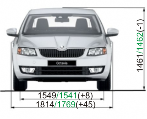
Spoljašnje dimenzije
Dužina (mm):4659
Širina (mm): 1814
Visina (mm): 1461
Međuosovinski razmak (mm): 2794
Unutrašnje dimenzije
Širina naprijed/nazad (mm): 1814
Visina naprijed/nazad (mm):1520
Prtljažnik min./max. (l): 590/1740
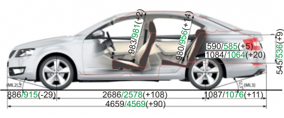
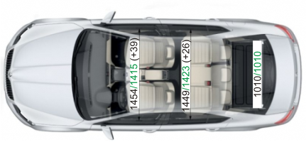
Preporuka za promjenu brzine
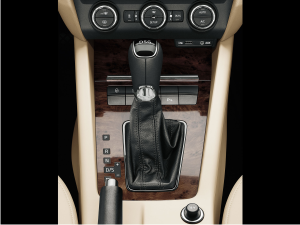
Pravilan odabir brzine može smanjiti potrošnju goriva i povećati užitak u vožnji. Uglađeniji rad motora garantuje manju potrošnju goriva i tiši rad.
Savjet za promjenu brzine je lociran na display-u instrument table.
Simboli u gornjem desnom uglu potvrđuju pravi odabir brzine, ili preporučuju smanjenje na manji stepen.
Benzinski motori
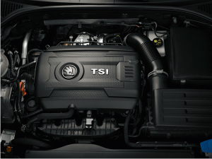
Na raspolahanju su različitih performansi.
MOžete odabrati novu generaciju turbobenzinskih TSi agregata: 1.2 TSI/63kW i 1.2 TSI/77kW Green tec; 1.4 TSi/103kW Green tec, 1.8 TSI/132kW Green tec.
Dizel motori
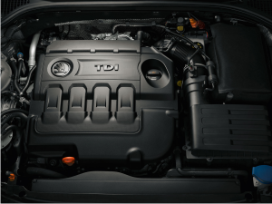
Su visoko učinkoviti i efikasni 1.6 TDI/66 kW i 1.6 TDI/77 kW Green tec, odnosno visoko performansni 2.0 TDI/110 kW Green tec.
Oprema
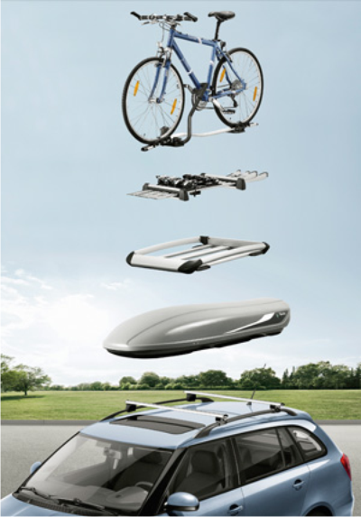
Škoda originalna dodatna oprema
Škoda vozila su dizajnirana za maksimalnu udobnost uključujući praktičnost i sigurnost. Kako bi na najbolji način Fabia ispunila sve Vaše potrebe i očekivanja, pripremili smo za Vas specijalnu ponudu Škoda originalne dodatne opreme..
Proizvodi u okviru originalne dodatne opreme imaju obilježja dugotrajnosti, sigurnosti, originalni tehnički rješenja i uvijek savršeno pristaju uz vozilo.
Držaći i nosači
Iako želite upotpuniti vaše slobodno vrijeme aktivno , vama je pored prostora potreban siguran i pouzdan prijevoz različitih sportskih stvari i prtljaga. Škoda originalna dodatna oprema nudi najbolja rješenja bilo da planirate ljetni ili zimski odmor.
U paleti naših proizvoda naći ćete nosač za bicikla prikopčan na kuku za prikolicu, držać sa opcijom zaključavanja, kutiju za skije i snowboarde ili interni držać za bicklo.
Škoda Fabia Combi može biti opremljena sa nvom opremom u Škoda originalnoj opremi - Škoda ski box. Ova kutija bez problema ima kapacitet za četiri para skija ili 2 snowboarda. Isto tako ona može služiti i za prijevoz drugog prtljaga. Tu je jako dosta prostora . Kutija ima volumen od 380 litara. U poređenju sa ostalim proizvodima ova kutija ima jednu veliku prednost. Peta vrata vozila nakon što je postavljena bez problema se normalno otvaraju kod svih Škoda modela.
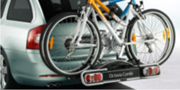
Unutrašnji nosač bicikla
Superiorni kapacitet prtljažnika nove Octavia Combi još više dolazi do izražaja upotrebnom unutrašnjeg nosača za bicikle, koji će vam omogućiti da smjestite dva bicikla u prtljažnik
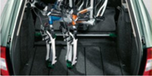
Nosač bicikla
Škodina originalna dodatna oprema pružit će Vam mogućnost da jos bolje iskorstite prostor Vašeg vozila i njegov kapacitet. Vrlo praktična pomoć je nosač za bicikla koji se fiksira na za to predviđeno mjesto, i time vam omogućava da transportuje 2 bicikla istovremeno
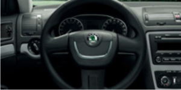
Kožni upravljač
Unutrašnjost nove Octavia Combi može biti dodatno opremljena sa mnogo sitnih dodataka, koji vožnju mogu učiniti još boljom. Tako npr. jednostavni, ali elegantni volan od kože
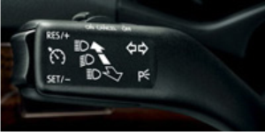
Tempomat
Učinite duga putovanja ugodnijim i lakšim. Ukoliko imate tempomat, sve što trebate učiniti jeste da memorišete trenutnu brzinu kretanja vozila, i upravljačka jedinica će održavati memorisanu brzinu. Deaktivacija tempomata je isto tako jednostavna, dovoljno je da stisnete kočnicu ili kvačilo
Boje
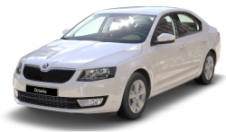
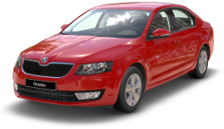
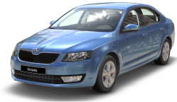
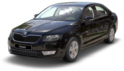
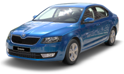
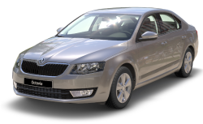
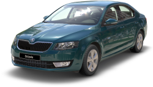
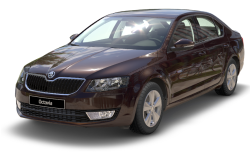
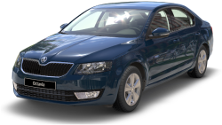
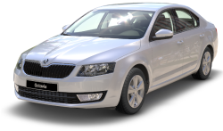
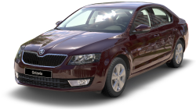
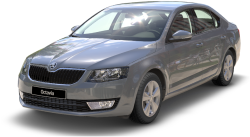